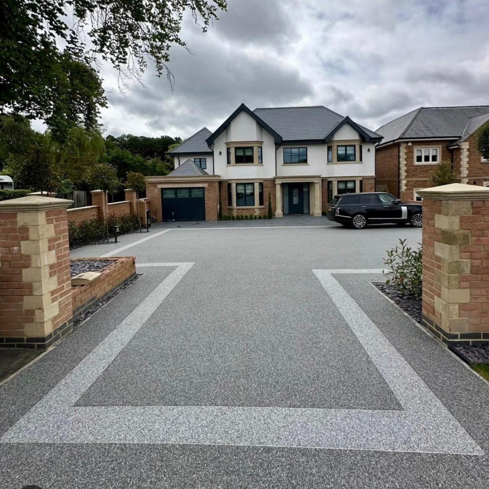
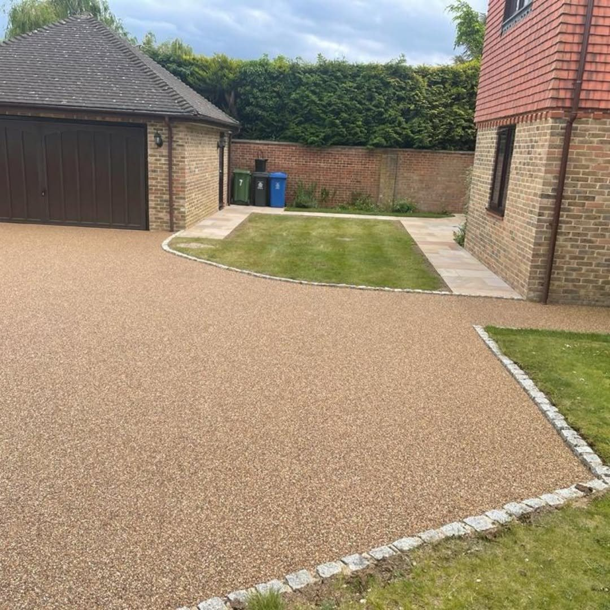
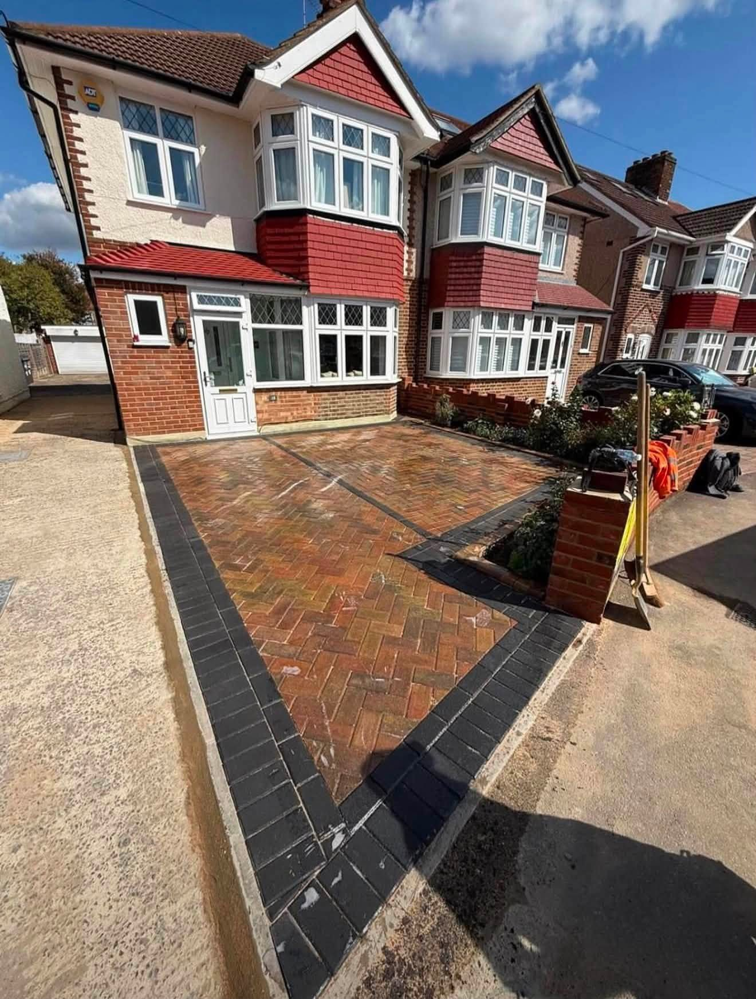
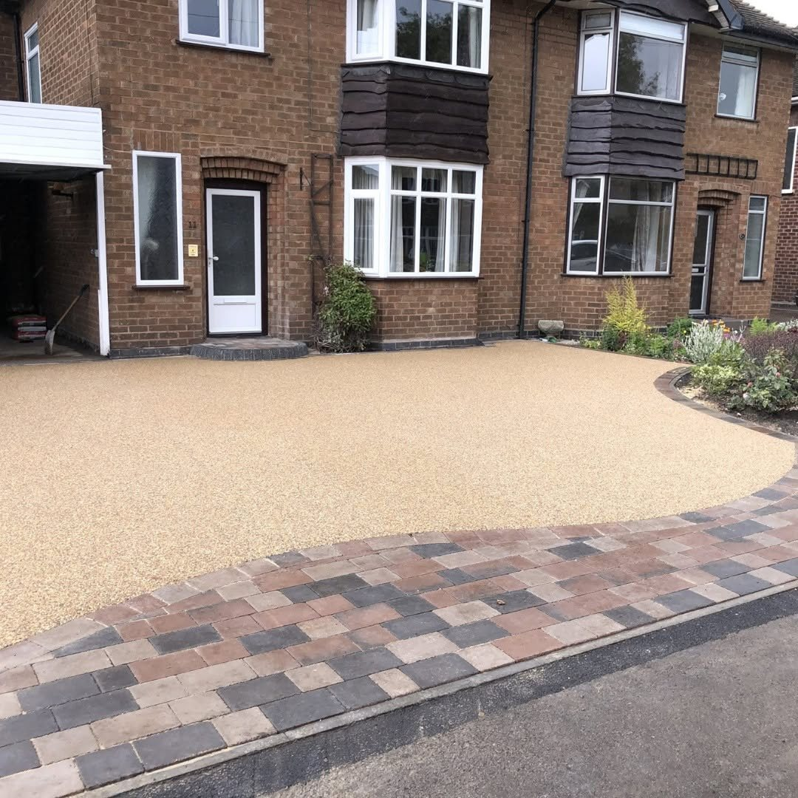
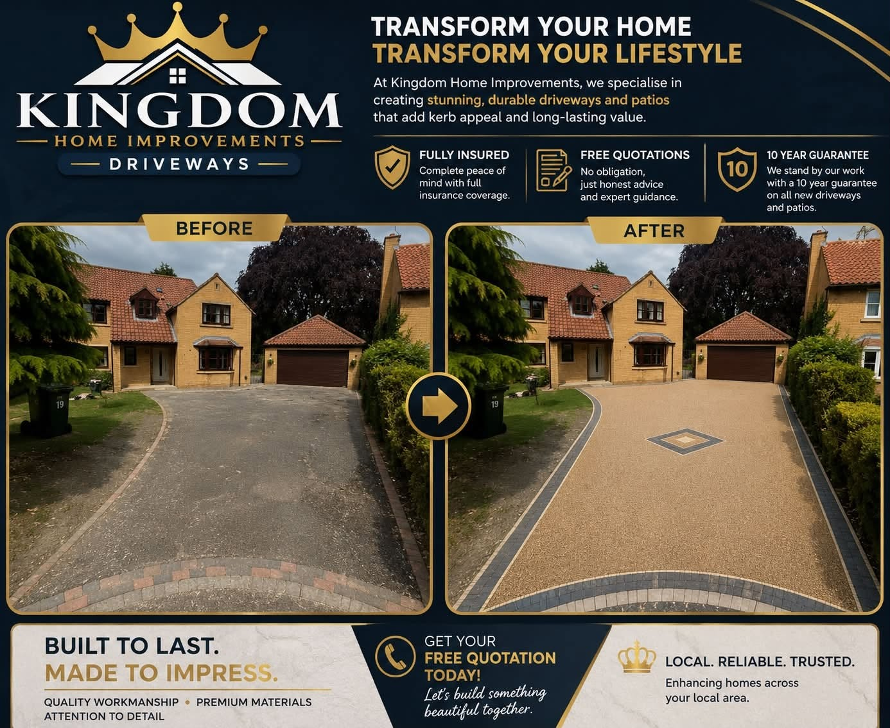
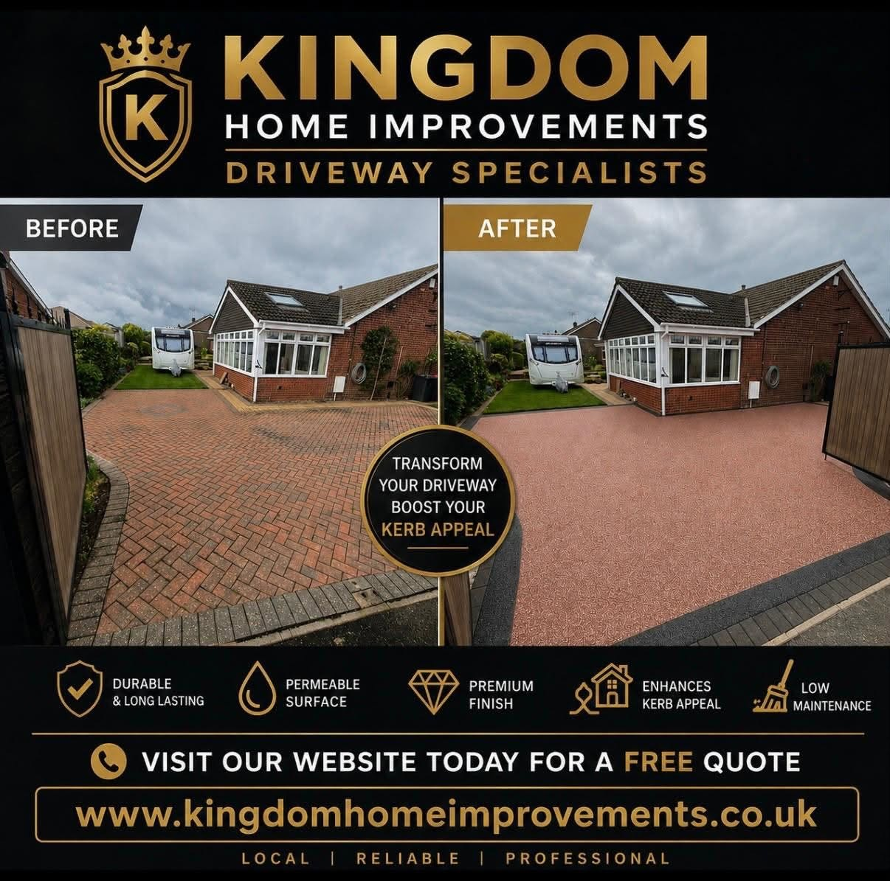
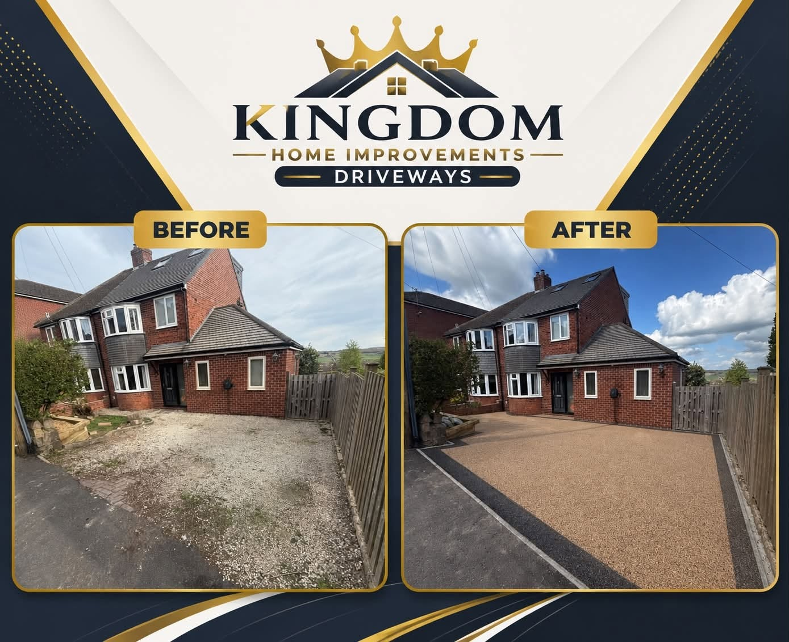
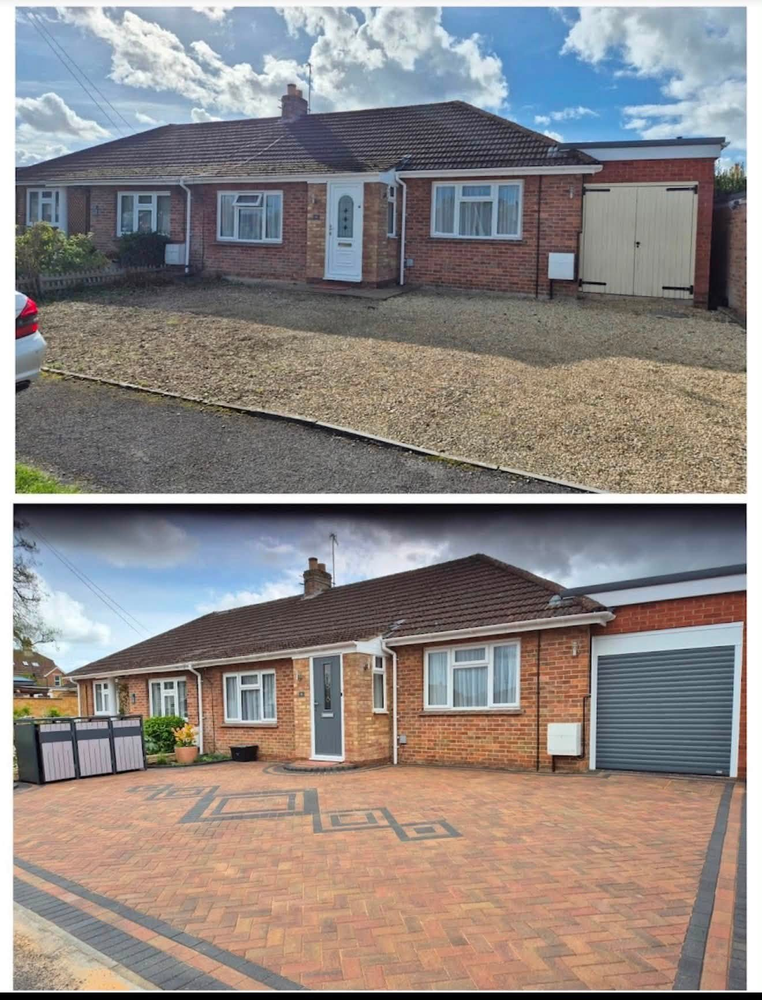

Resin DrivewaysClean, seamless-looking finishes

DERBY · DRIVEWAY TRANSFORMATIONS
Built to last. Made to impress.
Resin-bound surfaces, block paving and considered driveway layouts that transform the approach to your home.
Resin DrivewaysBlock PavingDriveway TransformationsDerby Area
Block PavingPatterns and borders with definition
Driveway TransformationsFrom old surfaces to a new look
Home ImprovementsAsk about the exterior work you need
DRIVEWAY DESIGN
The first impression starts at the kerb.
Kingdom's supplied photo shows a large completed driveway with contrasting borders that frame the entrance and suit the property. A good layout considers access, drainage, edges and everyday use.
Tell us about your driveway →Phone and email details have not been supplied yet. Add them before publishing this site.

SURFACES & FINISHES
Choose the driveway that fits your home.
Resin creates a smooth finish; block paving brings pattern and defined edges. These earlier paving photos illustrate the types of finishes available and are not presented as Kingdom projects.
Explore the options →

SUPPLIED PROJECTS
See the driveway transformations.
Kingdom's own before-and-after artwork is shown whole, including the labels and project details within each image.



BEFORE & AFTER
See what a new surface can change.
The original project artwork documents the approach before the work and the driveway after completion. Each image is kept intact so the comparisons and wording remain visible.
Plan your transformation →
KINGDOM HOME IMPROVEMENTS
Bring a better finish home.
Kingdom's supplied materials focus on driveway work in Derby and surrounding areas. The transformation examples show resin-style surfaces, block-paved details and considered borders.
The adjacent paving image is illustrative, from an earlier site, and is not a Kingdom project photograph.
01
Design and layout
Consider the shape, access and appearance of the entrance.
02
Surface choice
Resin and block-paving options for different homes.
03
Finished details
Borders and edges give the driveway its final definition.
REQUEST A QUOTE
Tell Kingdom about your driveway.
Phone and email details are placeholders until supplied. The enquiry form is a layout placeholder and will be connected to WhatsApp when the number is added.
Phone: [ADD PHONE NUMBER]
Email: [ADD EMAIL ADDRESS]
KINGDOM HOME IMPROVEMENTS
Ready to transform your driveway?
Derby & surrounding areas · [ADD EMAIL ADDRESS]
Call [ADD PHONE NUMBER]WhatsApp [ADD PHONE NUMBER]